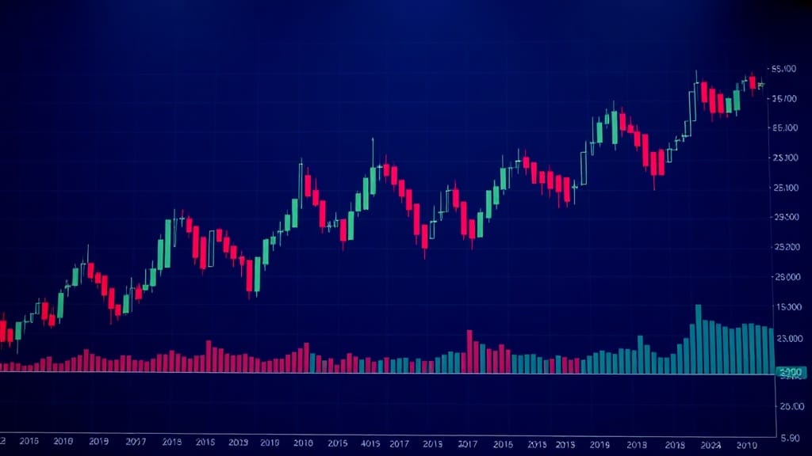

Best Robo-Advisor Portfolios Compared in 2026
I compared Betterment, Wealthfront, Schwab, Vanguard, Fidelity Go and M1 for 2026 — by fees, tax-loss harvesting, and minimum balance.
Z Zar · 25 May 2026 — 9 min read

Disclosure: ZarWealth uses Amazon and other affiliate links throughout this article. We receive a small commission on qualifying purchases, at no additional cost to you. This helps keep ZarWealth free of paywalls and intrusive ads. Always do your own research before investing.
Prefer a single fund over a managed portfolio? A target date fund is the lower-cost alternative — see the best target date funds for 2026 compared.
Want to go deeper on this? See What Is Stock Volatility and How to Handle It.
For the full breakdown, read How to Open a Brokerage Account in 10 Minutes.
Want to go deeper on this? See How to Invest in Real Estate With $1,000.
📈 Investing Part of our Complete Investing Guide — the only robo-advisor comparison you need for 2026.
🏆 Our Top Picks for 2026
| Pick | Best for | Rating | |
|---|---|---|---|
| Betterment | Best overall — tax-loss harvesting + goal planning | ★★★★★ | See pick → |
| Wealthfront | Best for taxable accounts and direct indexing | ★★★★★ | See pick → |
| Schwab Intelligent Portfolios | Best for fee-free management (large balances) | ★★★★☆ | See pick → |
| Vanguard Digital Advisor | Best for Bogleheads (lowest expense ratios) | ★★★★☆ | See pick → |
| Fidelity Go | Best for beginners (no fees under $25k) | ★★★★☆ | See pick → |
| M1 Finance | Best for custom portfolios (pie-style) | ★★★★☆ | See pick → |
Last reviewed: May 2026
Why robo-advisor portfolios matter in 2026
A robo-advisor builds and rebalances a diversified portfolio for you automatically — usually for a fraction of what a human advisor charges (0.25%/year vs 1%). For most people in 2026, this is enough: low-cost ETFs, automatic rebalancing, tax-loss harvesting on taxable accounts, and goal-based planning. No fund-picking, no behavioral mistakes, no expensive advisor.
The catch? Not all robo-advisors are built the same. Fees range from 0% (Schwab Intelligent Portfolios above $5k, Fidelity Go under $25k) to 0.65% (Betterment Premium). Some let you customize, some force a fixed portfolio. Some do tax optimization, some do not. This guide compares the six biggest names in the US so you can pick the right one for your situation.
If you are completely new to the concept, our robo-advisor for retirement planning guide walks through the basics first.
How we compared the portfolios
I evaluated each platform on five criteria that actually matter for long-term returns: management fee (the % charged annually on assets), minimum balance (some require $0, some $500+), tax-loss harvesting (which can add 0.5-1.0% annual return on taxable accounts), portfolio customization (can you tilt toward value/small-cap/ESG?), and goal planning quality (does the platform tell you how much to save monthly to retire in X years?).
I did not weight "AI features" or fancy dashboards — those are marketing, not math. What moves the needle over 30 years is fees, taxes, and rebalancing discipline.
Not sure a robo is even the right tool anymore? We put it head-to-head with the new option in robo-advisor vs AI advisor for 2026.
📘 Free Download
Get the 11-page FI Checklist PDF
A roadmap to financial independence — sent to your inbox the moment you subscribe. Plus weekly investing playbooks.
Send me the PDF →No spam. Unsubscribe anytime.
The 6 best robo-advisor portfolios in 2026 (reviewed)
Each review follows the same format: what the portfolio actually does, who it's for, what to skip, and the bottom line. If you are short on time, picks #1 and #2 cover 80% of typical investors.
1. Betterment — Best Overall Portfolio
Betterment manages over $40 billion across 850,000+ accounts and pioneered the modern robo-advisor model. Its core portfolio is a 12-ETF mix of US stocks, international stocks, emerging markets, and bonds — weighted by your risk tolerance and goal timeline.
What the portfolio actually does: automatic daily rebalancing, tax-loss harvesting on every taxable account (no minimum), tax-coordinated allocation across taxable + IRA + 401k, and goal-based projections (retirement, house, emergency fund). The 2026 update added direct indexing for accounts above $100k, which can add ~0.20% annual after-tax return.
Who it's for: anyone who wants the most mature, well-rounded robo-advisor without thinking about features. Especially good if you have multiple goals (retirement + house + kids' college) and want them tracked separately. What to skip: the Premium tier (0.65% + CFP access, $100k minimum) — unless you have a genuinely complex situation, the basic 0.25% tier is enough. Note that below $24k Betterment charges a flat $5/month unless you set up a recurring $200 deposit. The bottom line: if you cannot decide, pick Betterment. It is the safe default that almost nobody regrets.
The Little Book of Common Sense Investing by John C. Bogle
2. Wealthfront — Best for Direct Indexing
Wealthfront manages $50+ billion and competes head-to-head with Betterment. Same 0.25% fee, similar core portfolio, but with a sharper edge for taxable accounts: direct indexing kicks in at $100k, and at $500k they layer "Smart Beta" tilts that target value and small-cap factor exposure.
What the portfolio actually does: 11-ETF core allocation across US, international, emerging markets, dividend, and bonds. Daily rebalancing, daily tax-loss harvesting, and "Path" — a built-in goal planner that pulls live data from your linked accounts (Plaid integration). The cash account pays approximately 4.15% APY (verified September 2026) on uninvested cash, with FDIC coverage of up to $8M through a partner-bank sweep.
Who it's for: investors with $100k+ in taxable accounts who want the maximum after-tax return. Also great for engineers and quant-curious people — Wealthfront publishes detailed white papers explaining every algorithm. What to skip: their Risk Parity portfolio (still available but it underperformed badly 2022-2024 — not worth the higher 0.25% extra fee). The bottom line: if your taxable balance is large, Wealthfront's direct indexing alone is worth choosing it over Betterment.
3. Schwab Intelligent Portfolios — Best for Fee-Free Management
Schwab's robo charges 0% management fee. The catch: they hold 6-30% of your portfolio in cash (paying low yield), which is how they make money. For accounts above $50k, this cash drag costs you ~0.10-0.30% annually vs an all-invested portfolio. For accounts above $5k, you get tax-loss harvesting.
What the portfolio actually does: a 20-ETF allocation across stocks, bonds, REITs, gold, and cash. Automatic rebalancing. The Premium tier ($30/month flat + $300 one-time) that added CFP access was discontinued in 2026 — for serious balances, this is the cheapest way to get a real planner.
Who it's for: Schwab customers who already have brokerage accounts there and want a hands-off option without paying a management fee. Best if your portfolio is in tax-advantaged accounts (IRA/401k) where the cash drag matters less. What to skip: if your account is taxable AND smaller than $50k, the cash drag eats whatever you save in fees. The bottom line: the "free" pricing model is genuinely free — but only worth it if you understand the cash trade-off.
4. Vanguard Digital Advisor — Best for Bogleheads
Vanguard's robo offering charges 0.15-0.20% annually (lower than Betterment/Wealthfront), with $100 minimum and a 4-fund portfolio of Vanguard ETFs (VTI, VXUS, BND, BNDX). The underlying expense ratios are the lowest in the industry — typically 0.03-0.05%.
What the portfolio actually does: classic three-fund-portfolio philosophy automated. No tax-loss harvesting (Vanguard explicitly skips this — they argue the benefit is overstated and creates complexity). Annual rebalancing only. No customization. The Personal Advisor tier (0.30%, $50k minimum) adds human CFP access.
Who it's for: Bogleheads who want the lowest-cost, simplest possible robo. Also great for retirement accounts where tax-loss harvesting doesn't apply. What to skip: if you have taxable balances and want tax optimization, this is the wrong choice — Wealthfront or Betterment will beat Vanguard's after-tax returns despite higher fees. The bottom line: the cheapest robo by a wide margin. If "lowest fees, leave me alone" is your priority, this is it.
5. Fidelity Go — Best for Beginners
Fidelity Go charges $0 under $25k, then 0.35% above. Uses Fidelity Flex funds (their own zero-expense-ratio mutual funds, not ETFs). $10 minimum to start. No tax-loss harvesting on any tier.
What the portfolio actually does: a 7-fund allocation across US/international stocks and bonds, rebalanced periodically. Built into the Fidelity app, so the experience is seamless if you already bank/invest with them. Conservative defaults — even the "aggressive" portfolio caps stock allocation at 85%.
Who it's for: someone starting their first investment account with under $25k who wants a true zero-fee option. The simplicity is the whole point. What to skip: the moment you cross $25k, the 0.35% fee makes Betterment (0.25%) or Wealthfront (0.25%) cheaper and better-featured. Migrate then. The bottom line: the best on-ramp for beginners, with a clear "graduate to something else at $25k" exit.
6. M1 Finance — Best for Custom Portfolios
M1 is technically not a "pure" robo — it gives you full control over your portfolio composition (the "Pie" model), then automates the rebalancing and reinvestment. Free to use for the basic tier; M1 Plus is $3/month and adds smart transfers and lower margin rates.
What the portfolio actually does: you build a pie of ETFs/stocks with target percentages. Every contribution buys whatever is underweight to maintain your target allocation. No tax-loss harvesting. No goal planning. You can clone "Expert Pies" curated by M1 (e.g., Buffett-style, dividend-focused, FIRE-friendly) as starting points.
Who it's for: investors who want to specify their own portfolio (say, 70% VTI / 20% VXUS / 10% individual stocks) without manual rebalancing. Also great for people who like the visualization. What to skip: if you do not want to make the allocation decisions yourself, skip M1 entirely — the whole value is in user-defined pies. A traditional robo will pick for you. The bottom line: the best DIY-with-training-wheels robo. Not for purely hands-off investors.
How to choose the right robo-advisor for your situation
The "best" robo depends on three questions: how big is your taxable balance?, how much do you want to customize?, and where do you already bank?
If your taxable balance is above $100k and you want maximum after-tax returns, pick Wealthfront for direct indexing. If you are starting fresh and want the most mature, well-designed experience, pick Betterment. If you are a Boglehead who hates extra fees and does not care about tax-loss harvesting, pick Vanguard Digital Advisor. If you have under $25k and want truly $0 fees, start with Fidelity Go. If you want to build a custom portfolio with automated rebalancing, pick M1 Finance.
None of these are bad choices for long-term wealth building. The worst decision is staying in cash because you cannot pick — any of these will beat that outcome.
Frequently Asked Questions
What is the cheapest robo-advisor in 2026?
Schwab Intelligent Portfolios (0% management fee, but 6-30% cash drag) and Fidelity Go (free under $25k) are technically free. For the cheapest "real" management fee on a fully-invested portfolio, Vanguard Digital Advisor at 0.15-0.20%.
Are robo-advisors safe?
Yes — they hold your assets in SIPC-insured brokerage accounts ($500k coverage), same as any other broker. The "robo" part only affects how the portfolio is managed; your money is not held by the robo company itself.
Should I use a robo-advisor or invest myself in index funds?
If you would actually rebalance yearly, harvest tax losses, and resist behavioral mistakes during a 30% drawdown — DIY index funds will save you the 0.25% fee. If you would not (most people), pay the 0.25% for the robo to do it for you. The fee easily pays for itself in avoided mistakes.
Can robo-advisors handle Roth IRA accounts?
Yes — all six in this guide support Roth IRA, Traditional IRA, SEP IRA, and taxable accounts. Tax-loss harvesting does not apply to Roth/IRA accounts (no taxes to harvest), so the "no harvesting" robos like Vanguard make more sense for retirement-only investors.
How long does it take to open a robo-advisor account?
About 10-15 minutes online — name, address, SSN, bank linking. Funding typically takes 2-5 business days via ACH transfer. Wealthfront and Betterment let you start with $0 (set up first, fund later).
Do robo-advisors beat the S&P 500?
Sometimes yes, often no. The benchmark for a typical balanced robo portfolio (60% stocks/40% bonds) is not the S&P 500 — it's a blended index that includes international and bonds. Comparing to S&P 500 alone is unfair both ways. What robos do well: prevent you from selling at the bottom of a crash, which beats any benchmark.
The Simple Path to Wealth
by JL Collins
If you want to understand WHY the robo's "boring" 3-4 fund portfolio is enough — Collins explains it better than anyone else.
📊 Want the full picture?
For the broader investing strategy that informs robo-advisor selection, see our Complete Investing Guide — covers asset allocation, account types, and tax strategy from $0 to $1M.
📋 The FI Checklist
Track your path to financial independence with our free FI Checklist — a one-page printable covering every step from emergency fund to 25x annual expenses.
Disclosure: ZarWealth uses Amazon and other affiliate links throughout this article. We receive a small commission on qualifying purchases, at no additional cost to you. This helps keep ZarWealth free of paywalls and intrusive ads. Always do your own research before investing.
Last verified: 20 September 2026. Robo-advisor fees and cash rates change often — the figures above were checked against the providers' own pages and independent reviews on that date. Three things changed since this was first published in April 2026:
- Wealthfront's cash account rate fell from 5.0% to roughly 4.15% APY.
- Betterment's Premium tier is 0.65% with a $100k minimum (was listed at 0.40%), and balances under $24k pay a flat $5/month unless you set up a $200 recurring deposit.
- Schwab discontinued its Premium tier of Intelligent Portfolios in 2026.
If you are reading this months later, check the current numbers before deciding. Fees compound; a stale figure costs real money.